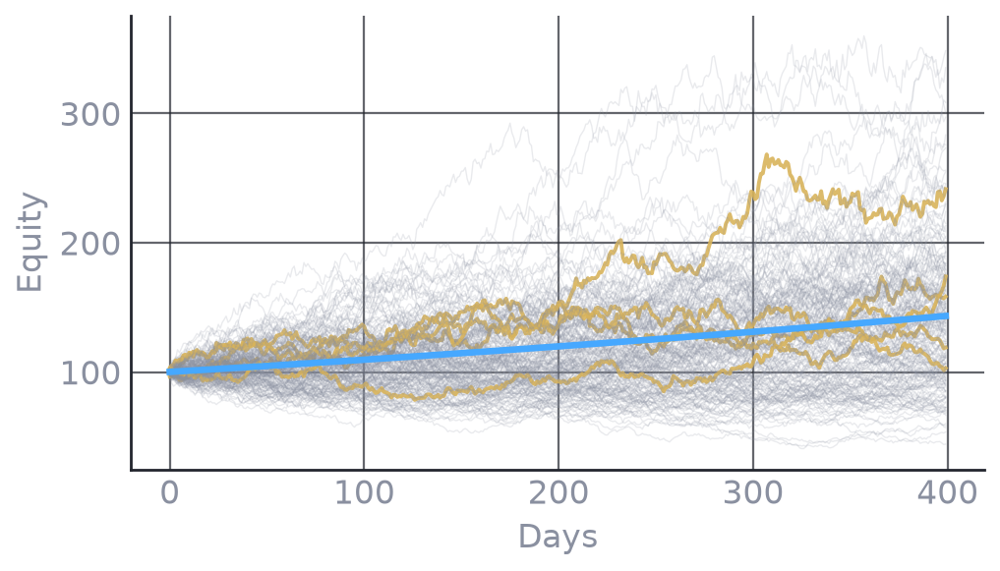
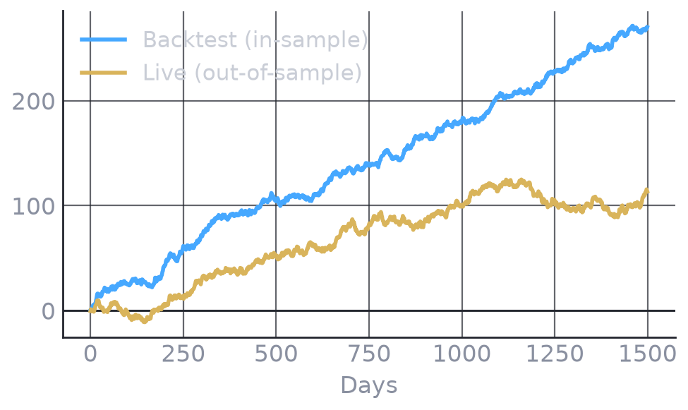
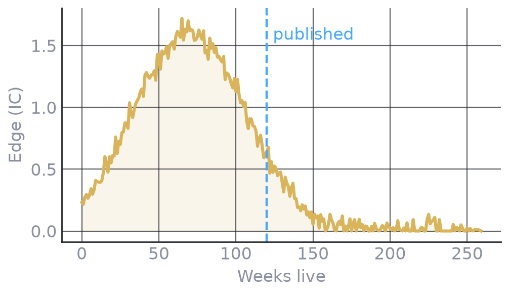
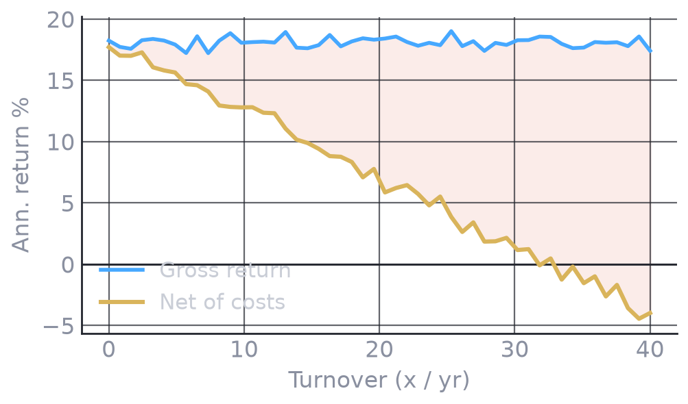
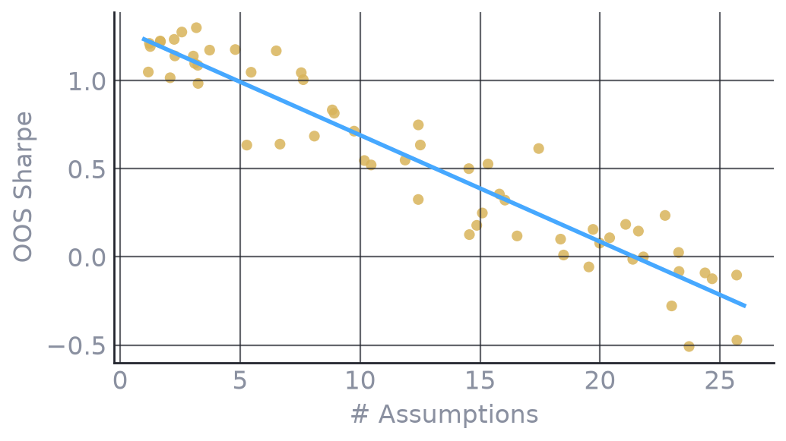
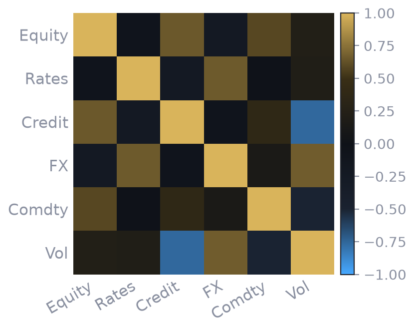
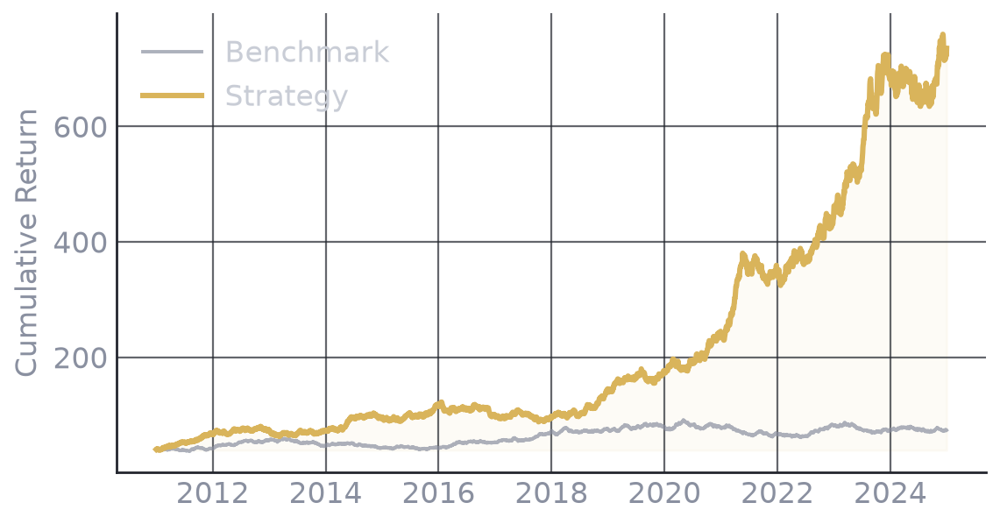

The 12 Laws of
Quant Trading
The principles every quantitative researcher eventually learns — not from textbooks, not from lectures. From the tape.
By Cloud9 Research

The market is a game of survival, not prediction. You will never out-forecast the crowd for long. The quants who last don't predict harder — they manage risk, respect costs, and let uncertainty pay them. These are the laws that survive out-of-sample.
Every model is wrong. A few are useful — briefly.
A model is a compression of reality, and compression always throws information away. The best you can hope for is one that's useful in the regime you built it for — and even then, only until the regime changes. Treat every model as a hypothesis with an expiry date, never a truth.
Reality is always messier than the mathematics.
Markets are made of people, incentives, liquidity and reflexivity — none of which fit into a closed-form equation. Elegant math earns academic points; it doesn't survive contact with a thin order book at 3pm on a Friday. When your model and the market disagree, the market is right.
Risk is what hasn't happened yet.
Volatility measures the past. Real risk is the fat-tailed event your sample never contained — the 2008, the 2020, the flash crash. If your risk model only knows what already happened, it will be blindsided by what hasn't. Size for the drawdown you haven't seen.
The market pays you to bear uncertainty, not to be right.
Returns are compensation for holding risk that others won't. Being "right" about direction is worthless if you're not paid to carry the uncertainty around it. The edge is in the risk premium, not the prediction.

A backtest measures the past. It cannot promise the future.
A backtest describes a path that already happened — one draw from a distribution. It tells you what would have worked, not what will. Overfit it and you're just memorising history. The only honest backtest is out-of-sample, walk-forward, and paranoid about lookahead bias.

Every edge decays the day it's discovered.
An edge exists because someone hasn't arbitraged it away yet. The moment it's known — published, copied, crowded — the return-to-risk erodes. Alpha is a depleting resource. The question isn't whether it decays, but how fast — and whether you exit before it's gone.

Costs and slippage quietly kill most "profitable" strategies.
Gross returns are a fantasy. Commissions, spread, market impact, borrow and taxes are the tax the tape charges — and they scale with turnover. A strategy printing 20% gross that trades daily can be flat after costs. Model the friction before you fall in love with the curve.
Capacity is finite — size destroys the best edges.
The sharpest edges live in small, illiquid corners that can't absorb size. Double your capital and your own market impact eats the very inefficiency you found. Every strategy has a capacity ceiling — and the best ones are often too small to matter to a large fund, which is exactly why they persist.

The more parameters a model needs, the less it survives out-of-sample.
Every free parameter is a degree of freedom to fit noise. A model with ten knobs will always look brilliant in-sample and fall apart live. Prefer the boring, few-parameter model that's robust over the intricate one that's perfect — parsimony is a form of risk management.

Correlation isn't diversification — it vanishes when you need it most.
Assets that look uncorrelated in calm markets converge toward 1 in a crisis — exactly when you're counting on the diversification. Correlation is a fair-weather friend. True diversification comes from different risk drivers and different liquidity, not from a historical correlation matrix.
Position sizing matters more than the signal.
Two traders with the same signal can end up rich or ruined depending on how they size. Bet too big and one bad streak ends the game; bet too small and the edge never compounds. The signal decides direction; sizing decides survival — and survival is what compounds.

Risk management is the only alpha that compounds.
Returns are noisy and edges decay, but not blowing up is permanent. The trader who avoids the catastrophic loss keeps their capital in the game long enough for small edges to compound into large ones. In the long run, staying alive is the strategy.
That's the handbook.
Save it. Re-read it the next time a backtest looks too good to be true. And follow along for the next one.
Follow @cloud9.markets →